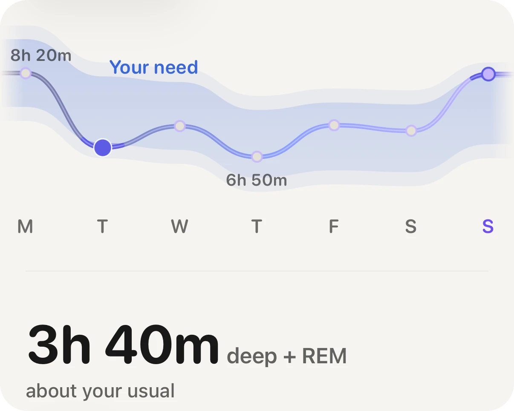

Grundlagen · Schlaf

Die meisten Erwachsenen brauchen etwa 7 bis 9 Stunden, aber entscheidend ist deine eigene Zahl. Fachgremien nennen einen Bereich, kein Ziel, und in diesem Bereich stecken Menschen, die mit weniger fit sind, und solche, die jede Minute brauchen. Deinen Bedarf erkennst du an deinen eigenen ruhigen Nächten, nicht an einem Poster.
Eine gemeinsame Stellungnahme der American Academy of Sleep Medicine und der Sleep Research Society (Watson und Kollegen, 2015) empfiehlt Erwachsenen, regelmäßig mindestens 7 Stunden pro Nacht zu schlafen. Das Gremium der National Sleep Foundation (Hirshkowitz und Kollegen, 2015) beschreibt dasselbe als Spanne von etwa 7 bis 9 Stunden, deren Ränder sich mit dem Alter verschieben. Beide nennen einen Bereich, weil die Belege keine einzelne Zahl für alle stützen.
Ein Teil der Streuung steckt in den Menschen selbst. Shi und Kollegen (2019) beschrieben eine seltene Genvariante, mit der Träger sich mit deutlich weniger Schlaf ausgeruht fühlen. Die meisten haben sie nicht, aber sie zeigt, dass der Bedarf keine einheitliche Einstellung für alle ist.
Mehr ist auch nicht automatisch besser. In einer Übersicht prospektiver Studien fanden Cappuccio und Kollegen (2010), dass sowohl kurzer als auch langer Schlaf in großen Gruppen mit höherer Sterblichkeit einherging. Das ist ein Muster in Gruppen, kein Urteil über deinen Körper, und langer Schlaf kann auch Anzeichen von etwas anderem sein, nicht nur dessen Ursache.
In einer großen prospektiven Kohorte fanden Windred und Kollegen (2024), dass die Regelmäßigkeit des Schlafs das Sterberisiko besser vorhersagte als die Schlafdauer. Zu ähnlichen Zeiten ins Bett zu gehen und aufzustehen ist kein weicher Tipp, sondern in dieser Studie das stärkere Signal. Wer montags wenig und samstags viel schläft, dessen Durchschnitt verbirgt das Entscheidende.
Uhren schätzen Schlaf aus Bewegung und Herzsignalen. Dauer und Rhythmus sind der verlässliche Teil. Die Schlafphasen (Tief, REM, Leicht) sind der ungenaueste Teil, und Tiefschlaf kann ein Handgelenk am schlechtesten erkennen.
Aera, für iPhone und Apple Watch
Aera liest den Schlaf, der in Apple Health ankommt, von einer Apple Watch oder einem anderen Tracker, der dorthin schreibt, und lernt deinen Bedarf aus der Mitte deiner eigenen Nächte der letzten acht Wochen, nie unter sieben Stunden, statt acht Stunden anzunehmen. Bis vier Wochen an Nächten vorliegen, nutzt sie ein Ziel, das du selbst festlegst. Jede Nacht wird daran gemessen, zusammen mit der Regelmäßigkeit deines Rhythmus. Tippst du auf die Zahl, erklärt das Field Guide, wie sie entstanden ist und wo eine Schätzung vom Handgelenk unzuverlässig wird. Kein Konto, die Zahlen werden auf deinem iPhone berechnet.
Aera ist kein Medizinprodukt.
Die meisten Erwachsenen kommen mit 7 bis 9 Stunden am besten zurecht, Fachgremien empfehlen mindestens 7. Dein eigener Bedarf liegt in diesem Bereich und zeigt sich an deinen ruhigen Nächten.
Für manche ja, für die meisten Erwachsenen liegt es unter dem empfohlenen Minimum von 7 Stunden. Wenn du wochenlang mit 6 den ganzen Tag klar bist, sagt das etwas. Wenn du Koffein und Wecker brauchst, ist es wohl zu wenig.
Ja. In einer großen Kohorte (Windred und Kollegen, 2024) sagte ein regelmäßiger Schlafrhythmus das Sterberisiko besser voraus als die Schlafdauer.
Gesamtschlafzeit und Rhythmus sind vernünftige Schätzungen. Die Schlafphasen sind der schwächste Teil, vertraue also Dauer und Regelmäßigkeit mehr als dem Phasendiagramm.
Verwandter Ratgeber: Was ist ein guter Schlafscore auf der Apple Watch?
 Oder mit dem iPhone scannen
Oder mit dem iPhone scannenKostenlos loslegen, ganz ohne Konto. Läuft mit der Uhr, die du schon trägst.